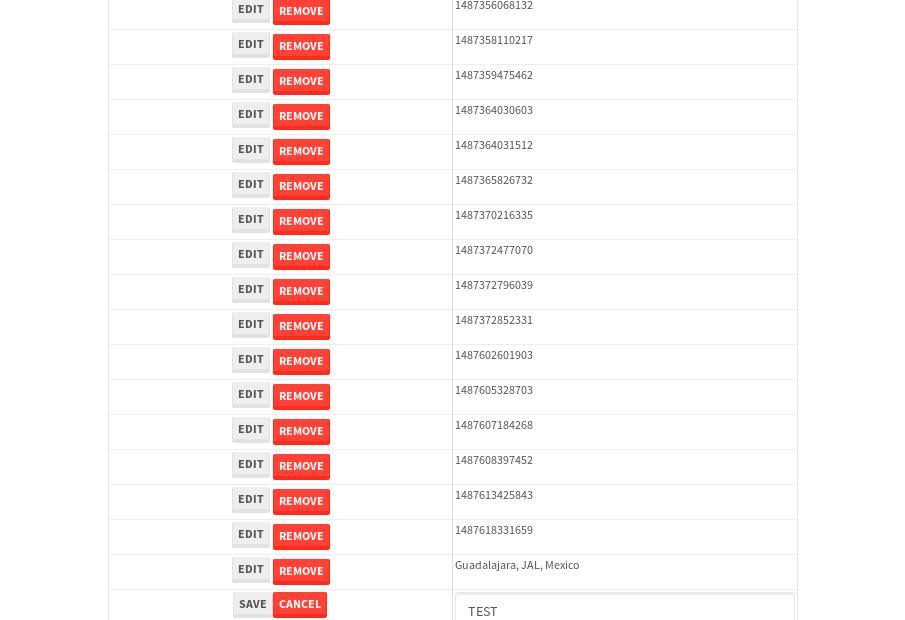

tbColumn.Grid Sorting - 29.66sTests: 5Skipped: 0Failures: 0 should sort data in ascending order then on descending order when sorting by Order Id column - 7.533sTests passed: 100.00%should order data in ascending order when click-sorting an unsorted text column - 5.197sTests passed: 100.00%should order data in descending order when click-sorting an ascending-sorted text column - 5.755sTests passed: 100.00%should order data in ascending order when click-sorting an unsorted date column - 5.414sTests passed: 100.00%should order data in descending order when click-sorting twice an unsorted date column - 5.759sTests passed: 100.00%
tbColumn.Grid Components - 4.371sTests: 3Skipped: 0Failures: 0 should print grid - 1.852s***Skipped***Tests passed: 0%should export grid - 1.302s***Skipped***Tests passed: 0%should show column selector - 1.216sTests passed: 100.00%
tbSingleForm.Form validations - 8.537sTests: 2Skipped: 0Failures: 0 should have an empty required field - 7.505sTests passed: 100.00%should not be able to click on save - 1.031sTests passed: 100.00%
Tubular Filters.tbColumnFilter - 106.644sTests: 12Skipped: 0Failures: 0 should cancel filtering when clicking outside filter-popover - 9.35sTests passed: 100.00%should disable Value text-input for "None" filter - 6.435sTests passed: 100.00%should disable apply button for "None" filter - 6.598sTests passed: 100.00%should decorate popover button when showing data is being filtered for its column - 11.815sTests passed: 100.00%should correctly filter data for the "Equals" filtering option - 7.874sTests passed: 100.00%should correctly filter data for the "Not Equals" filtering option - 7.891sTests passed: 100.00%should correctly filter data for the "Contains" filtering option - 8.682sTests passed: 100.00%should correctly filter data for the "Not Contains" filtering option - 8.967sTests passed: 100.00%should correctly filter data for the "Starts With" filtering option - 7.168sTests passed: 100.00%should correctly filter data for the "Not Starts With" filtering option - 6.828sTests passed: 100.00%should correctly filter data for the "Ends With" filtering option - 6.853sTests passed: 100.00%should correctly filter data for the "Not Ends With" filtering option - 7.113sTests passed: 100.00%
Tubular Filters.tbColumnDateTimeFilter - 136.945sTests: 12Skipped: 0Failures: 0 should cancel filtering when clicking outside filter-popover - 7.229sTests passed: 100.00%should disable Value text-input for "None" filter - 6.748sTests passed: 100.00%should disable apply button for "None" filter - 7.01sTests passed: 100.00%should clear filtering when clicking on Clean button - 18.017sTests passed: 100.00%should decorate popover button when showing data is being filtered for its column - 11.795sTests passed: 100.00%should correctly filter data for the "Equals" filtering option - 6.811sTests passed: 100.00%should correctly filter data for the "Not Equals" filtering option - 7.391sTests passed: 100.00%should correctly filter data for the "Between" filtering option - 12.736sTests passed: 100.00%should correctly filter data for the "Greater-or-equal" filtering option - 12.02sTests passed: 100.00%should corretlly filter data for the "Greater" filtering option - 12.315sTests passed: 100.00%should correctly filter data for the "Less-or-equal" filtering option - 12.547sTests passed: 100.00%should correctly filter data for the "Less" filtering option - 11.712sTests passed: 100.00%
Tubular Filters.tbColumnOptionsFilter - 82.289sTests: 3Skipped: 0Failures: 0 should cancel filtering when clicking outside filter-popover - 9.066sTests passed: 100.00%should decorate popover button when showing data is being filtered for its column - 12.069sTests passed: 100.00%should filter column-elements in accordance to the selected filter when selecting a single option - 50.319sTests passed: 100.00%
Tubular Filters.tbTextSearch - 49.682sTests: 5Skipped: 0Failures: 0 min-chars is not set - 1.218sTests passed: 100.00%should filter data in searchable-column customer name to matching inputted text, starting from 3 characters - 7.091sTests passed: 100.00%should filter data in searchable-column shipper city to matching inputted text, starting from 3 characters - 12.495sTests passed: 100.00%should show clear button when there is inputted text only - 7.053sTests passed: 100.00%should clear filtering when clicking clear button - 16.497sTests passed: 100.00%
tbForm related components.tbCheckboxField - 7.935sTests: 2Skipped: 0Failures: 0 should save changes on "SAVE" - 4.394sTests passed: 100.00%should discard changes on "CANCEL" - 1.808sTests passed: 100.00%
tbForm related components.tbDropDownEditor - 11.551sTests: 5Skipped: 0Failures: 0 should set initial input value to the value of "value" attribute when defined - 1.817sTests passed: 100.00%should show the component name value in a label field when "showLabel" attribute is true - 1.961sTests passed: 100.00%should show a help field equal to this attribute, is present - 2.312sTests passed: 100.00%should submit modifications to item/server when clicking form "Save" - 2.906sTests passed: 100.00%should NOT submit modifications to item/server when clicking form "Cancel" - 2.048sTests passed: 100.00%
tbForm related components.tbTextArea - 17.516sTests: 7Skipped: 0Failures: 0 should set initial input value to the value of "value" attribute when defined - 2.368sTests passed: 100.00%should be invalidated when the number of chars is not in the range of "min" and "max" attributes - 2.144sTests passed: 100.00%should show the component name value in a label field when "showLabel" attribute is true - 1.628sTests passed: 100.00%should show a help field equal to this attribute, is present - 1.875sTests passed: 100.00%should require the field when the attribute "required" is true - 2.195sTests passed: 100.00%should submit modifications to item/server when clicking form "Save" - 3.987sTests passed: 100.00%should NOT submit modifications to item/server when clicking form "Cancel" - 2.048sTests passed: 100.00%
tbForm related components.tbDateEditor - 17.681sTests: 6Skipped: 0Failures: 3 should set initial date value to the value of "value" attribute when defined - 3.219sExpected false to be true.✗Tests passed: 0.00%should be invalidated when the date is not in the range of "min" and "max" attributes - 3.194sTests passed: 100.00%should show the component name value in a label field when "showLabel" attribute is true - 2.126sTests passed: 100.00%should show a help field equal to this attribute, is present - 2.44sTests passed: 100.00%should submit modifications to item/server when clicking form "Save" - 2.504sExpected false to be true.✗Tests passed: 0.00%should NOT submit modifications to item/server when clicking form "Cancel" - 2.36sExpected false to be true.✗Tests passed: 0.00%
tbForm related components.tbTypeaheadEditor - 15.882sTests: 7Skipped: 0Failures: 0 should show an options list when there is an API-info/component entered-data - 1.889sTests passed: 100.00%should select the option clicked - 2.392sTests passed: 100.00%should show a "delete" button when an option/match is selected, and delete the option if button is clicked - 2.269sTests passed: 100.00%should show a label value equal to the component name when "showLabel" attribue is true - 1.636sTests passed: 100.00%should require a value when "require" attribute is true - 1.981sTests passed: 100.00%should submit modifications to item/server when clicking form "Save" - 3.078sTests passed: 100.00%should NOT submit modifications to item/server when clicking form "Cancel" - 2.068sTests passed: 100.00%
tbForm related components.tbSimpleEditor - 19.871sTests: 9Skipped: 0Failures: 0 should set initial input value to the value of "value" attribute when defined - 1.6sTests passed: 100.00%should be invalidated when the number of chars is not in the range of "min" and "max" attributes - 2.911sTests passed: 100.00%should show the component name value in a label field when "showLabel" attribute is true - 1.708sTests passed: 100.00%should set input placeholder to the value of "placeholder" attribute - 2.221sTests passed: 100.00%should validate the control using the "regex" attribute, if present - 1.864sTests passed: 100.00%should show a help field equal to this attribute, is present - 1.83sTests passed: 100.00%should require the field when the attribute "required" is true - 1.756sTests passed: 100.00%should submit modifications to item/server when clicking form "Save" - 3.141sTests passed: 100.00%should NOT submit modifications to item/server when clicking form "Cancel" - 2.241sTests passed: 100.00%
tbForm related components.tbNumericEditor - 16.212sTests: 7Skipped: 0Failures: 0 should set initial component value to the value of "value" attribute when defined - 1.754sTests passed: 100.00%should be invalidated when the entered number is not in the range of "min" and "max" attributes - 2.148sTests passed: 100.00%should show the component name value in a label field when "showLabel" attribute is true - 1.857sTests passed: 100.00%should show a help field equal to this attribute, is present - 2.021sTests passed: 100.00%should require the field when the attribute "required" is true - 1.984sTests passed: 100.00%should submit modifications to item/server when clicking form "Save" - 3.063sTests passed: 100.00%should NOT submit modifications to item/server when clicking form "Cancel" - 1.975sTests passed: 100.00%
tbForm Connection Error NoModelKey - 2.837sTests: 1Skipped: 0Failures: 0 tbForm connection error functionality - 0.552sTests passed: 100.00%
tbForm Connection Error NoServerUrl - 2.681sTests: 1Skipped: 0Failures: 0 tbForm connection error functionality - 0.519sTests passed: 100.00%
tbGridComponents - 32.916sTests: 6Skipped: 0Failures: 4 should add item with newRow method - 4.492sExpected 'EDIT REMOVE TEST' not to be 'EDIT REMOVE TEST'.✗Tests passed: 50.00%should add item with newRow method and cancel action - 1.105sTests passed: 100.00%should update item with tbSaveButton - 2.549sExpected '' to be 'TEST'.✗Tests passed: 0.00%should NOT update item on cancel Update action - 0.947sFailed: ElementNotVisibleError✗Tests passed: 0.00%should remove item with tbRemoveButton - 21.377sExpected 62 not to be 62, 'should remove the row from the table'.✗Tests passed: 50.00%should NOT remove item on cancel Remove action - 1.02sTests passed: 100.00%
tbGridPager.navigation buttons - 9.828sTests: 1Skipped: 0Failures: 0 should perform no action when clicking on the numbered navigation button corresponding to the current-showing results page - 1.296sTests passed: 100.00%
tbGridPager.navigation buttons.first/non-last results page related functionallity - 3.902sTests: 2Skipped: 0Failures: 0 should disable "first" and "previous" navigation buttons when in first results page - 1.641sTests passed: 100.00%should enable "last" and "next" navigation buttons when in a results page other than last - 2.261sTests passed: 100.00%
tbGridPager.navigation buttons.last/non-first results page related functionallity - 4.63sTests: 2Skipped: 0Failures: 0 should disable "last" and "next" navigation buttons when in last results page - 2.204sTests passed: 100.00%should enable "first" and "previous" navigation buttons when in a results page other than first - 2.426sTests passed: 100.00%
tbGridPager.page navigation - 7.519sTests: 5Skipped: 0Failures: 0 should go to next results page when clicking on next navigation button - 1.589sTests passed: 100.00%should go to previous results page when clicking on previous navigation button - 1.454sTests passed: 100.00%should go to last results page when clicking on last navigation button - 1.789sTests passed: 100.00%should go to first results page when clicking on first navigation button - 1.322sTests passed: 100.00%should go to corresponding results page when clicking on a numbered navigation button - 1.365sTests passed: 100.00%
tbGridPagerInfo - 5.23sTests: 2Skipped: 0Failures: 0 should show text in accordance to numbered of filter rows and current results-page - 1.747sTests passed: 100.00%should show count in footer - 0.682sTests passed: 100.00%
tbHttp - 19.383sTests: 8Skipped: 1Failures: 0 should be authenticated - 2.911sTests passed: 100.00%retrieve data - 2.439sTests passed: 100.00%should not login bad credentials - 2.462sTests passed: 100.00%should have a refresh token - 3.831sTests passed: 100.00%should remove authentication - 2.381sTests passed: 100.00%get method-Is not authenticated - 2.89sTests passed: 100.00%post method-Is not authenticated - 2.466sTests passed: 100.00%should regenerate access token on post - 0s***Skipped***Tests passed: 0%
tbPageSizeSelctor - 10.395sTests: 4Skipped: 0Failures: 0 should filter up to 10 data rows per page when selecting a page size of "10" - 3.174sTests passed: 100.00%should filter up to 20 data rows per page when selecting a page size of "20" - 1.645sTests passed: 100.00%should filter up to 50 data rows per page when selecting a page size of "50" - 2.354sTests passed: 100.00%should filter up to 100 data rows per page when selecting a page size of "100" - 1.722sTests passed: 100.00%
tbRowSelectable - 9.401sTests: 2Skipped: 0Failures: 0 selected rows - 4.74sTests passed: 100.00%unselected rows - 2.942sTests passed: 100.00%
tbSingleForm - 20.533sTests: 8Skipped: 0Failures: 1 should load correct info - 2.444sTests passed: 100.00%should change customer name - 2.38sTests passed: 100.00%should save it - 3.049sFailed: Element is not enabled✗Tests passed: 0.00%should clear the inputs - 2.375sTests passed: 100.00%should update - 2.652sTests passed: 100.00%should reset editor - 2.952sTests passed: 100.00%should not save if not Changes - 2.256sTests passed: 100.00%should not be able to click on save - 2.423sTests passed: 100.00%


{kind=link}